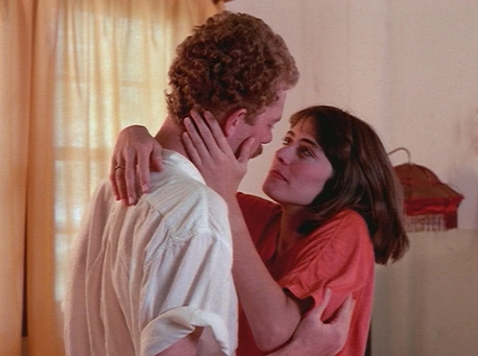

ME BEIJA (Bésame)
|
(35 mm, 83 min, color, 1984) Vera es orientadora educacional en una escuela del interior. Se pasa los días resolviendo pequeños problemas de los alumnos y, en los recreos, tomando té y conversando con su gran amigo Leandro. De pronto, surge un huésped en la escuela. Parece que su nombre es Raúl. Nadie sabe de donde vino o lo que hace para vivir. Vera se enamora, Leandro descubre que está solo, el director Sartori se inquieta. De alguna forma, toda la escuela se modifica con el breve pasaje de Raúl. Para siempre. |
 Foto por Alberto Salvá: Rudi Lagemann y Nina de Pádua |
{kind=link}
Dirección: Werner Schünemann
Producción Executiva: Sérgio Lerrer
Guión: Werner Schünemann ,Rudi Lagemann y Giba Assis Brasil
Dirección de Fotografia: Alberto Salvá
Dirección de Arte: José Artur Camacho y Marlise Storchi
Música: Celso Loureiro Chaves
Dirección de Producción: Rudi Lagemann
Montaje: Francisco Sérgio Moreira
Assistente de Dirección: Giba Assis Brasil
Distribución: Casa de Cinema PoA
Elenco Principal:
Nina de Pádua (Vera)
Rudi Lagemann (Raul)
Ney Laux (Leandro)
Breno Ruschel (Sartori)
Premios
- 2º Rio Cine Festival, 1984:
Mejor Fotografía, Mejor Actriz (Nina de Pádua), Mejor Mixaje, Actor Revelación (Rudi Lagemann), Mención Honrosa para director de estreno, Mención Honrosa de propuesta de producción.
- 17º Festival del Cine Brasileño, Brasilia, 1984:
Mejor Actor (Rudi Lagemann) y Mejor Dirección.
Crítica
"BÉSAME es una historia de amor: Raúl (Rudi Lagemann), un hombre con sus casi 30 años, sin esperanza y misterioso, abandona Porto Alegre y parte hacia el interior, donde conoce a Vera (Nina de Pádua), encantadora profesora escolar. (...) A pesar de la poca edad de sus realizadores (...), BÉSAME se revela un trabajo de alto nivel, no sólo por la concepción del argumento, sino también por la excelente banda musical de Celso Loureiro Chaves y por la correcta - y premiada - fotografía de Alberto Salvá."
(Ricardo Largman, JORNAL DO BRASIL, Rio de Janeiro, 23/05/84)"O diretor tem senso de ritmo e sabe explorar as potencialidades dramáticas contidas em cada plano. (...) Sem utilizar palavras de ordem, sem recorrer a esquemas superficiais e deixando de lado a retórica que tem feito naufragar no ridículo os panfletários sem substância, Werner Schünemann e seus colaboradores no roteiro (...) souberam criar situações que refletissem toda uma realidade, que se manifesta, assim, através do comportamento dos personagens. (...) ME BEIJA, sendo um filme feito por jovens, aponta para o futuro, enquanto descreve os conflitos que se estabelecem entre seres humanos em situações impróprias para o desenvolvimento da expressão plena."
(Hélio Nascimento, JORNAL DO COMÉRCIO, Porto Alegre, 13/11/84)"ME BEIJA é o mais perfeito dos filmes gaúchos, embora não chegue ao nível de comunicação de VERDES ANOS. Schünemann propõe um tema mais intimista, um triângulo de amor imperfeito, que transcende a uma simples crônica romântica. No centro de tudo está a personagem Vera (excelente criação de Nina de Pádua), uma figura forte, lutadora, apaixonada e de grande conteúdo interior. (...) Os dois homens que se apaixonam por ela são bem o seu oposto. Leandro (...) não consegue contestar nada porque se sente protegido pela estrutura arbitrária e conservadora do colégio. Raul é um cínico desiludido, de passado nebuloso, desesperançado e destrutivamente contestador. (...) A única que resiste a todos os embates do filme é Vera. é mãe, mulher, amante, sem perder entretanto o sonho e a paixão."
(Goida, ZERO HORA, Porto Alegre, 22/11/84)"ME BEIJA é um filme que termina por nos lembrar que as marcas da repressão não são apenas as políticas. Existem também as marcas na alma, invisíveis num primeiro olhar, mas que terminam por se constituir na própria capacidade de um indivíduo, oprimido pelo medo, de alcançar o equilíbrio emocional. (...) Cinematograficamente, (o filme apresenta) a correta opção pelo realismo de cena e pela luz que sempre emana de personagens verídicos. Como documento, expressa a dor, a frustração e os sinais de esperança de uma geração que cresceu limitada e que terminou criando o seu espaço."
(Hélio Nascimento, FILME CULTURA, Rio de Janeiro, dezembro/84)
12/11/1984